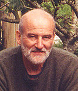

Who Are We?
Burren Translations was established in the early 1990s. We offer a professional service to clients both in Ireland and abroad. Confidentiality is guaranteed, and all colleagues involved in processing documentation on our behalf are obliged to observe the same duty of nondisclosure and not to divulge any information of a confidential nature (unless required to by law).
Caoilte Breatnach is a professional member of the Irish Translators' & Interpreters' Association and holds a Diploma in Translation from the Institute of Linguists' Guild. He specialises in law, finance and insurance, is self-employed, and works full-time as a translator. All translation work is proofread by another professional and revised in-house prior to dispatch to the client.
Caoilte Breatnach's other interests include folklore, local history, and singing. He has been involved in many voluntary projects on behalf of the local community, including the Francis Fahy commemoration project and as editor of the local community publication, Trácht Magazine. In 2010, he organised the transfer of the 1956-57 anthropological archive kindly donated to the Irish State by Robert Cresswell, Paris [See: Gallery Here.]
He has also contributed to heritage and cultural publications and radio broadcasts. To view full list of published works, click here.
Our Clients
We prefer not to name our clients due to our code of confidentiality. Burren Translations has a sound business relationship with our customers at home and abroad. This is borne out by the repeat business we continue to receive. Clients know that once they have entrusted us with a job:
- they are assured of high-quality work, and
- we never miss a deadine.
Copywriting, editing and Revision
We have been writing and improving texts for many years. In consultation with the customer, we revise and improve the readability and impact of documents for publication. The more readable the text, the more effective the communication in getting the client's message across successfully.